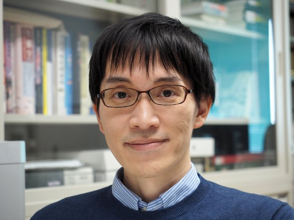

日本は周囲を海に囲まれた海洋国家であり、領海・排他的経済水域の規模は世界第6位の広さを持ちます。また、急峻な渓流から広大な平野を流れる大河川まで、多様な陸水環境が大小さまざまな島嶼の中に存在しています。しかし、そこにはどのくらい多様な生物が生息しているのか、どのような暮らしをしているのか、まだまだ分かっていません。
私は、海や川に住む水生生物を対象にその多様性や生態の解明を行ってきました。特に近年は、魚類とそれに寄生する甲殻類（ウオノエやグソクムシ）に着目しています。ヒトを含め、あらゆる生物にはそれに寄生する生物（いわゆる寄生虫）が存在します。また、寄生生物に寄生する生物というものも存在します。つまり、地球上の生物多様性の少なくとも半分は、寄生して暮らす生物によって支えられているのです。
しかし、人畜に有害な寄生虫を除けば、寄生生物の多様性や生態はほとんど明らかになっていません。私はこうした見過ごされてきた多様性を「顧みられない生物多様性」と名付け、それを明らかにしていくことで日本の自然の真の多様性や固有性の理解に貢献していきたいと考えています。
ネイチャーポジティブの実現に向けた施策や事業への助言
地域の水域生態系（海や河川）への理解を深めるためのイベントや学校行事などの支援
水産資源に対する大型寄生生物（主に節足動物門）の影響評価
我が国は生物多様性条約の締約国であり、生物多様性国家戦略のもとで今後ますますネイチャーポジティブの視点での行政やビジネスが求められていきます。これまで国土交通省の河川水辺の国勢調査アドバイザーや自治体のレッドデータブック委員などを務めてきたほか、科学体験イベントや自然観察会にも参画してきた経験があります。身近な水辺環境から、地元の隠れた生物多様性への理解を深めてみませんか。

生物多様性・水辺環境・ネイチャーポジティブ施策に関するご相談を承っています。